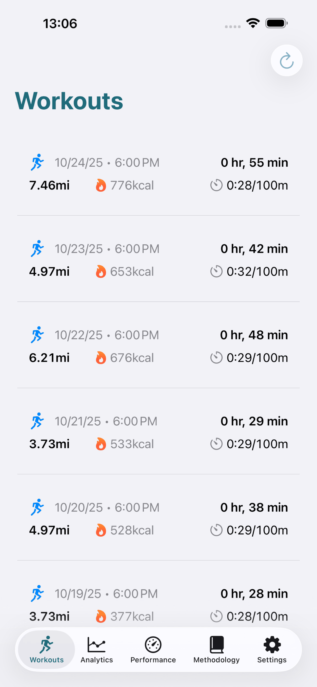

Caminhe com Inteligência, Viva com Saúde
Aplicação iOS com privacidade prioritária, análise de marcha baseada em investigação, zonas de treino baseadas em cadência e monitorização abrangente de saúde. Baseada em estudos revistos por pares, incluindo CADENCE-Adults, investigação Peak-30 e ciência da biomecânica.
✓ Teste gratuito de 7 dias ✓ Sem necessidade de conta ✓ 100% dados locais

Construído sobre Evidência Científica
Cada métrica e recomendação está fundamentada em investigação revista por pares
Investigação Peak-30 de Cadência
Baseada no estudo UK Biobank que demonstra que ≥100 spm durante 30 minutos prevê independentemente 40-50% menos risco de mortalidade (Del Pozo-Cruz et al., JAMA 2022)
Limiar de Intensidade Moderada
O estudo CADENCE-Adults (Tudor-Locke et al., 2019) estabeleceu que 100 passos/minuto = 3 METs com 86% de sensibilidade, 89,6% de especificidade—o fundamento das nossas zonas de cadência
Prevenção de Lesões com ACWR
Rácio de Carga de Treino Aguda:Crónica >1,50 aumenta o risco de lesão 2-4× (Gabbett, Br J Sports Med 2016)—monitorizamos isto automaticamente para o manter seguro
Fórmulas Validadas
Desde a equação de Moore cadência→METs até cálculos de Custo de Transporte, cada fórmula inclui dados de validação e interpretação clínica
Métricas Avançadas de Desempenho na Caminhada
Análise de nível profissional concebida para caminhantes de todos os níveis
Zonas de Treino Baseadas em Cadência
Treine com 5 zonas baseadas em investigação (60-99 spm a 130+ spm) baseadas no estudo CADENCE-Adults. Mais prático que zonas de frequência cardíaca—sem necessidade de banda torácica. Monitorize a cadência Peak-30 diariamente.
Análise Abrangente da Marcha
Monitorize 7 métricas essenciais da marcha: cadência, comprimento da passada (40-50% da altura), tempo de contacto com o solo (200-300ms), apoio duplo (20-30%), assimetria (fórmula GSI), velocidade e oscilação vertical (4-8cm).
Gestão de Carga de Treino
Previna o excesso de treino com Walking Stress Score (WSS) e monitorização ACWR. Monitorize o rácio agudo:crónico (mantenha 0,80-1,30) e obtenha recomendações de recuperação personalizadas baseadas na sua carga.
Biomecânica e Eficiência
Análise profunda de mecânica da passada e monitorização da economia da caminhada. Otimize o Custo de Transporte (~0,48-0,55 kcal/kg/km a 1,3 m/s), identifique desvios da marcha, melhore a eficiência em 10-15%.
Integração com Saúde
Integração perfeita com Apple Health. Importe treinos de caminhada automaticamente e sincronize frequência cardíaca, distância, passos e métricas de saúde. Compatível com métricas de mobilidade do Apple Watch (Estabilidade da Caminhada, % de Apoio Duplo, Assimetria).
Privacidade Completa
Todos os seus dados de caminhada permanecem no seu iPhone. Sem sincronização na nuvem, sem contas, sem rastreamento. As suas métricas de saúde são 100% privadas e seguras com processamento local. Filosofia compatível com GDPR e HIPAA.
A Única Aplicação de Caminhada Construída sobre Ciência
Não apenas contagem de passos—análise abrangente baseada em investigação de biomecânica
Cadência em Vez de Frequência Cardíaca
Porque é importante: A frequência cardíaca varia com calor, stress, cafeína, doença. A cadência é fiável, prática e comprovada. O estudo CADENCE-Adults mostrou que 100 spm = intensidade moderada com 86% de sensibilidade—mais preciso que estimativas de FC.
Monitorização de Cadência Peak-30
Métrica inovadora: Os seus melhores 30 minutos consecutivos de caminhada por dia prevêem independentemente a saúde cardiovascular e mortalidade (78.500 participantes do UK Biobank). Monitorizamos isto diariamente—nenhuma outra aplicação de caminhada o faz.
Prevenção de Lesões com ACWR
Ciência do desporto adaptada para caminhada: Monitorize o seu Rácio de Carga de Treino Aguda:Crónica para prevenir lesões por sobrecarga. A investigação mostra que ACWR >1,50 = 2-4× risco de lesão. Alertamos antes que ocorram picos perigosos.
Otimização da Economia da Caminhada
Eficiência energética: Monitorize o Custo de Transporte e eficiência da caminhada (WEI, WALK Score). Melhore a economia em 10-15% através de treino em Zona 2, otimização da passada e trabalho de força—com orientação específica.
Simetria da Marcha e Risco de Queda
Métricas de nível clínico: Calcule o Índice de Simetria da Marcha (GSI) para detetar assimetria. Apoio duplo >35% e velocidade de caminhada <0,8 m/s indicam risco elevado de queda—crítico para adultos mais velhos e reabilitação.
Mais de 50 Citações Revistas por Pares
Orientação baseada em evidência: Cada recomendação liga-se a investigação publicada. Desde os limiares de cadência de Tudor-Locke até ao sinal vital de velocidade de marcha de Studenski—transparência na ciência.
Comece a Caminhar com Inteligência em 3 Passos
Ligue ao Apple Health
Importe os seus treinos de caminhada automaticamente do Apple Health. O Walk Analytics analisa os seus dados históricos para estabelecer métricas de base e calcular a sua carga de treino crónica (média de 28 dias).
Obtenha Informações Baseadas em Evidência
Receba análise abrangente incluindo cadência Peak-30, métricas de marcha, economia da caminhada (Custo de Transporte) e ACWR. Compreenda os seus padrões com limiares baseados em investigação.
Treine Cientificamente
Siga recomendações personalizadas para zonas de cadência, progressão de carga de treino (5-10% semanalmente) e recuperação. Monitorize melhorias na eficiência, velocidade e resultados de saúde ao longo do tempo.
Perfeito Para Todos os Caminhantes
Entusiastas da Saúde
Alcance a recomendação de 150 min/semana de atividade moderada (100+ spm). Monitorize a cadência Peak-30 para saúde cardiovascular. Cumpra as recomendações WHO/CDC com precisão—não apenas contagem de passos.
Caminhantes de Fitness
Treine com zonas de cadência (Zona 2 a 100-110 spm para base aeróbica, intervalos a 120-130 spm). Melhore a economia da caminhada em 10-15% através de treino sistemático. Monitorize WSS para otimizar a carga.
Marchadores de Competição
Domine a técnica de marcha atlética (130-160 spm, perna reta, rotação exagerada da anca). Monitorize a biomecânica, controle a carga de treino, previna o excesso de treino com ACWR.
Adultos Mais Velhos (65+)
Monitorize a velocidade de marcha como sinal vital (mantenha >1,0 m/s). Monitorize % de apoio duplo (<35% = boa estabilidade), assimetria e indicadores de risco de queda. Deteção precoce de declínio da mobilidade.
Pacientes de Reabilitação
Monitorize objetivamente as melhorias da marcha com a fórmula GSI (assimetria <5% = bom), recuperação do comprimento da passada e progresso da velocidade de caminhada. Documente resultados para profissionais de saúde.
Perda de Peso e Saúde
Otimize a queima de calorias com treino por zonas. Calcule o gasto energético com precisão com a equação cadência→METs de Moore. Construa hábitos de exercício sustentáveis com progressão gradual da carga.
Conhecimento Científico Aprofundado
Guias abrangentes que explicam a ciência por trás de cada métrica
Zonas de Treino Baseadas em Cadência
Mudança completa de paradigma da FC para cadência. Aprenda as 5 zonas (60-99 a 130+ spm), investigação CADENCE-Adults, conceito Peak-30 e protocolos IWT.
Mecânica da Passada na Caminhada
Fases do ciclo da marcha, técnica de marcha atlética (regras World Athletics), diferenças entre caminhar e correr. Fórmula GSI para assimetria, forças de reação do solo.
Economia da Caminhada e CoT
Otimização do Custo de Transporte, modelo do pêndulo invertido (65-70% de recuperação de energia), número de Froude, curva de economia em U, transição caminhada-corrida a 2,2 m/s.
Gestão de Carga de Treino
Cadência Peak-30 (Del Pozo-Cruz 2022), conceito de períodos vigorosos, prevenção de lesões com ACWR, periodização 3:1, distribuição de intensidade polarizada vs piramidal.
Métricas de Análise da Marcha
7 métricas essenciais com limiares clínicos: cadência (100 spm = 3 METs), comprimento da passada (40-50% da altura), apoio duplo (>35% = risco de queda), assimetria, velocidade.
Fórmulas Científicas
11 equações validadas: Moore cadência→METs (R²=0,87), VO₂ ACSM, gasto energético, GSI, WALK Score, Custo de Transporte, carga de treino, previsão 6MWT.
Preços Simples e Transparentes
Experimente o Walk Analytics gratuitamente durante 7 dias. Não é necessário cartão de crédito.
Walk Analytics Premium
- Monitorização de cadência Peak-30
- Zonas de treino baseadas em cadência
- Análise avançada da marcha (GSI, CoT, WEI)
- Walking Stress Score (WSS)
- Prevenção de lesões com ACWR
- 11 fórmulas validadas
- Privacidade completa de dados (processamento local)
- Integração com Apple Health
- Sem anúncios, nunca
Teste gratuito de 7 dias • Cancele a qualquer momento • Não é necessário cartão de crédito
Perguntas Frequentes
O que torna o Walk Analytics diferente de outras aplicações de caminhada?
Somos a única aplicação de caminhada construída sobre investigação revista por pares. Cada métrica—cadência Peak-30, ACWR, Custo de Transporte—vem de estudos publicados. Citamos mais de 50 artigos científicos e explicamos a evidência por trás de cada recomendação. Não é contagem de passos; é biomecânica e fisiologia do exercício aplicada à caminhada.
O que é a cadência Peak-30 e porque é importante?
A cadência Peak-30 é a sua média de passos por minuto durante os melhores 30 minutos consecutivos de caminhada de cada dia. Um estudo inovador com 78.500 pessoas (Del Pozo-Cruz, JAMA 2022) mostrou que prevê independentemente o risco de mortalidade—mesmo após controlar os passos diários totais. Monitorizamos isto automaticamente, algo que nenhuma outra aplicação faz.
Como é que o ACWR previne lesões?
O Rácio de Carga de Treino Aguda:Crónica compara o seu treino recente (últimos 7 dias) com a sua média de longo prazo (28 dias). A investigação mostra que ACWR >1,50 aumenta o risco de lesão 2-4 vezes. Calculamos isto diariamente e alertamos antes que ocorram picos perigosos, ajudando-o a progredir com segurança com aumentos semanais de 5-10%.
Porque zonas de cadência em vez de zonas de frequência cardíaca?
A cadência é mais fiável e prática. O estudo CADENCE-Adults provou que 100 spm = intensidade moderada (3 METs) com 86% de sensibilidade e 90% de especificidade. A frequência cardíaca varia com calor, stress, doença, cafeína—a cadência não. Além disso, não precisa de banda torácica ou relógio; apenas conte os passos.
O Walk Analytics pode ajudar na prevenção de quedas?
Sim. Monitorizamos indicadores clínicos de risco de queda: velocidade de marcha <0,8 m/s, apoio duplo >35%, assimetria (GSI) >10% e estabilidade da caminhada. Estes são limiares baseados em evidência da investigação geriátrica. A deteção precoce permite intervenção antes que as quedas ocorram—crítico para adultos com 65+ anos.
Como é que o Walk Analytics protege a minha privacidade?
Todos os dados permanecem no seu iPhone—ponto final. Sem sincronização na nuvem, sem contas, sem servidores a receber os seus dados de saúde. Processamos tudo localmente usando algoritmos no dispositivo. As suas métricas de caminhada, localização, frequência cardíaca—completamente privadas. Seguimos a filosofia GDPR e HIPAA mesmo não sendo legalmente obrigados (já que nunca vemos os seus dados).
Preciso de equipamento especial?
Não. O Walk Analytics funciona com iPhone ou Apple Watch. Para métricas básicas (cadência, distância, passos), apenas o seu telefone. Para dados de frequência cardíaca e métricas mais precisas, um Apple Watch ajuda mas não é necessário. Integramos com Apple Health, por isso qualquer dispositivo compatível funciona.
O Walk Analytics é adequado para reabilitação?
Absolutamente. Somos usados por pacientes de reabilitação que monitorizam a recuperação objetivamente. A fórmula do Índice de Simetria da Marcha (GSI) quantifica diferenças esquerda-direita (<3% normal, >10% clinicamente significativo). Monitorize a recuperação do comprimento da passada, melhoria da velocidade de caminhada e redução da assimetria. Partilhe dados objetivos com o seu fisioterapeuta ou médico.
Qual é a base científica das 11 fórmulas?
Cada fórmula inclui dados de validação e citação da investigação original. Exemplo: a equação cadência→METs de Moore (R²=0,87, precisão ±0,5 METs, 76 adultos) é 23-35% mais precisa que equações ACSM mais antigas. Mostramos a ciência, não apenas cálculos de caixa preta.
Pronto Para Caminhar com Inteligência?
Junte-se aos caminhantes que melhoram a saúde com análise da marcha e ciência do treino baseadas em investigação
Transferir Walk AnalyticsTeste gratuito de 7 dias • iOS 16+ • Compatível com Apple Health • Não é necessário cartão de crédito
Analítica Privada de Caminhada - Análise Marcha, WSS para iOS
Aplicativo de caminhada privado para iOS com análise avançada de marcha. Acompanhe métricas de passada, zonas de caminhada e WSS localmente. Insights baseados na...
- 2026-01-23
- app analítica caminhada · app análise marcha · app iOS privada · métricas saúde caminhada · análise passada
- Bibliografia